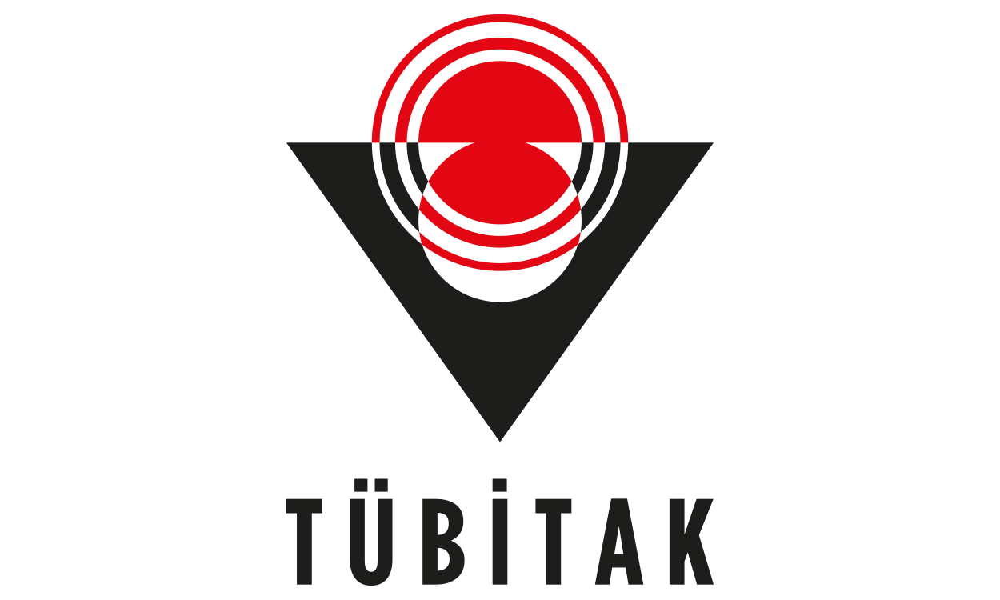
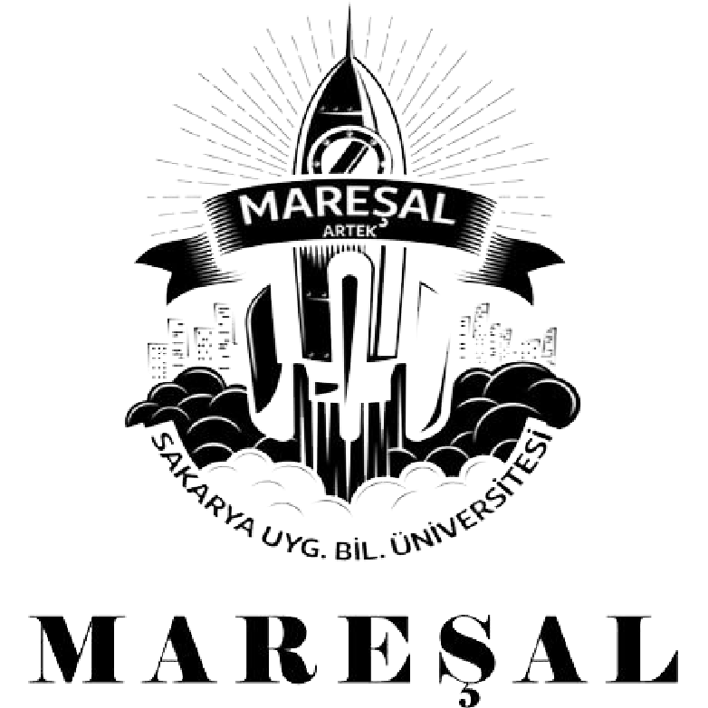
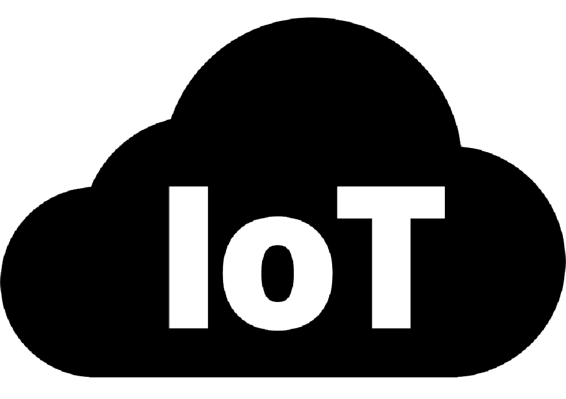

I developed various mechanical and software solutions using the Arduino development environment. The project focused on optimizing industrial conveyor belt systems through sensor integration, automation logic, and real-time monitoring. It improved efficiency and reduced manual intervention in production lines.
Learn More
I designed a ground station application using C# language. Real-time flight data was collected from various sensors (altimeter, IMU, GPS) connected to an Arduino onboard system. The data was visualized and logged for post-flight analysis. This project enhanced my skills in telemetry, embedded systems, and real-time data processing.
Learn More
This project was designed using the Google Firebase platform. Soil moisture sensors connected to an ESP8266 module sent data to the cloud. Based on predefined thresholds, the system automatically activated a water pump. Users could also monitor and control the system remotely via a web interface. This project demonstrated cloud integration and IoT principles.
Learn More